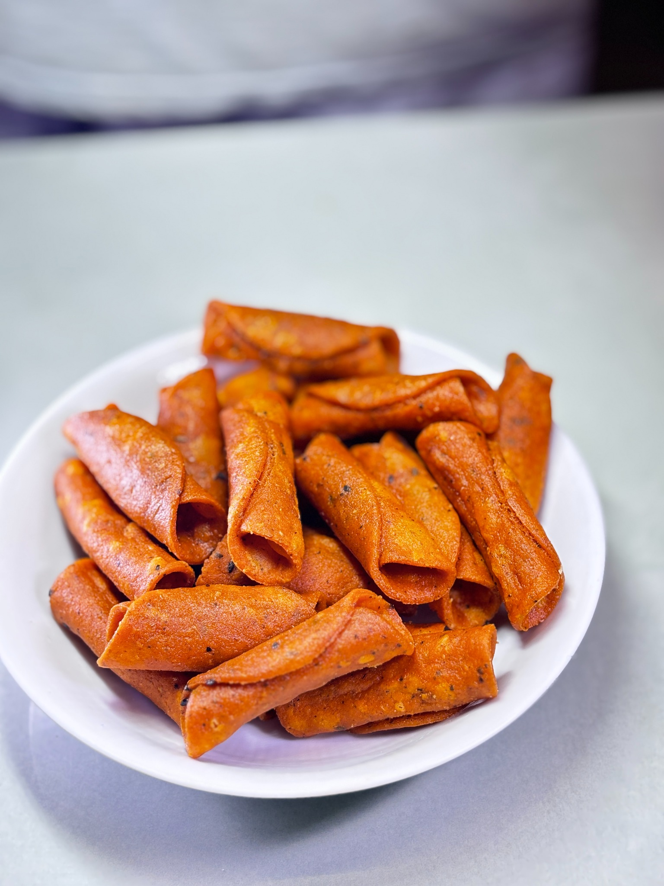

Krizpia Spicy Kuzhalappam is made for snack lovers who enjoy a bold Kerala-style spicy taste. It combines crispy texture with chilli, garlic, pepper, and traditional spices.
Order on WhatsAppKrizpia Traditional Kuzhalappam is a crispy Kerala rice snack prepared using traditional recipes and quality ingredients. It brings the authentic homemade taste of Kerala in every bite.
Made in Kerala Crispy & Crunchy Hygienically Packed No Artificial PreservativesRice Flour, Coconut, Onion, Green Chilli, Chilli Powder, Black Pepper, Ginger, Garlic, Sesame Seeds, Cumin, Fennel, Salt, Vegetable Oil.
Contains Sesame Seeds.
| Brand | Krizpia |
|---|---|
| Manufacturer | Rangeela Products |
| Net Weight | 160 g |
| Shelf Life | Best Before 50 Days |
| Storage | Store in a cool and dry place |
| FSSAI License | 21326171000212 |
| Energy | 490 kcal |
|---|---|
| Protein | 5.8 g |
| Carbohydrates | 55.0 g |
| Total Sugars | 1.6 g |
| Added Sugars | 0 g |
| Dietary Fiber | 3.0 g |
| Total Fat | 27.0 g |
| Saturated Fat | 8.5 g |
| Trans Fat | 0 g |
| Cholesterol | 0 mg |
| Sodium | 350 mg |
Kuzhalappam is a traditional crispy Kerala snack made mainly from rice flour.
Yes, Krizpia Traditional Kuzhalappam is vegetarian.
It is best before 50 days from packing date.